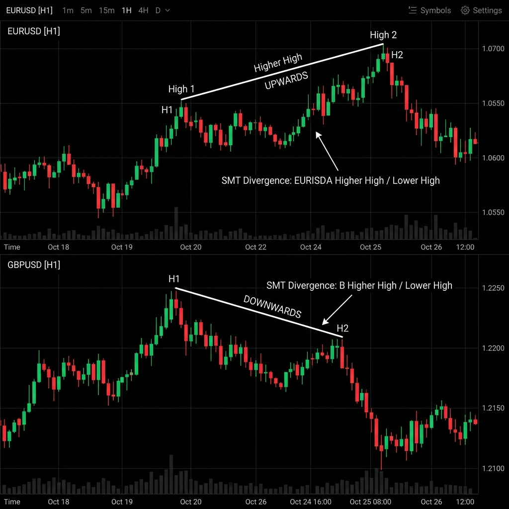
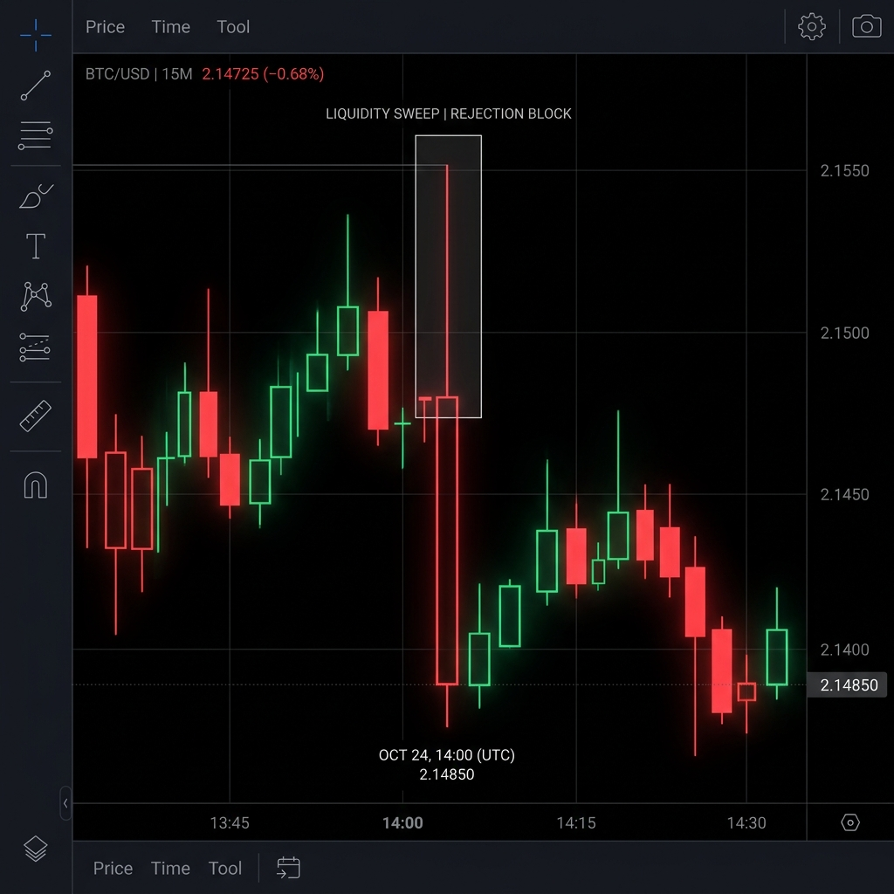

Retail trading concepts keep you trapped in a cycle of stop-hunts. To break free, you must understand the true mechanics of market delivery. This masterclass combines the precision of Malaysian SNR (MSNR) with the institutional logic of ICT (Inner Circle Trader) Concepts.
1. ICT Manipulations & Liquidity Sweeps
The market is engineered to seek liquidity. Before any major move, "Smart Money" must accumulate positions. They do this by triggering the stop-losses of retail traders.
- The Stop Hunt (Judas Swing): A sudden, aggressive move above an old high or below an old low. Its sole purpose is to trap breakout traders and hit stop losses.
- Inducement: Creating obvious (but weak) support/resistance levels to encourage retail traders to enter early, only to sweep them later.
Rule of thumb: If the market hasn't swept liquidity yet, YOU are the liquidity. Always wait for the manipulation phase to complete before entering.
2. SMT Divergence (Smart Money Technique)
How do we know if a breakout is real or just an ICT Manipulation? We use SMT Divergence. This concept compares two highly correlated assets (e.g., EURUSD and GBPUSD, or Nasdaq and S&P500).

How to Read SMT:
In a normal market, if EURUSD makes a Higher High, GBPUSD should also make a Higher High. SMT occurs when this symmetry breaks.
- Bearish SMT: EURUSD makes a Higher High, but GBPUSD fails to make a Higher High (it makes a Lower High). This discrepancy indicates institutional selling (distribution) is happening under the surface. The breakout is a trap.
- Bullish SMT: Asset A makes a Lower Low, but Asset B makes a Higher Low. This is accumulation. Smart money is buying.
3. The Rejection Block
Once we identify manipulation via SMT, we look for the entry trigger: The Rejection Block.

A Rejection Block is formed when a candle sweeps a major liquidity pool and is immediately rejected, leaving behind a very long wick. Unlike traditional Order Blocks that focus on the candle body, the Rejection Block focuses entirely on the wick itself.
- Identification: A long wick that pierced through an old high/low and closed back inside the range.
- Execution: When price retraces back into the area of that long wick, it offers a highly precise, low-risk entry for a reversal. The algorithm is mitigating the positions it used to manipulate the market.
1. Identify an MSNR "Fresh Zone" on the Daily timeframe.
2. Wait for price to reach the zone and sweep an old high/low (Manipulation).
3. Check correlated assets for SMT Divergence to confirm the sweep is a trap.
4. Look for a Rejection Block (long wick) on the 15m/1H chart.
5. Enter on the retest of the Rejection Block targeting the next internal liquidity pool.
Ready to apply these concepts live with the team?
Join The Originals Telegram